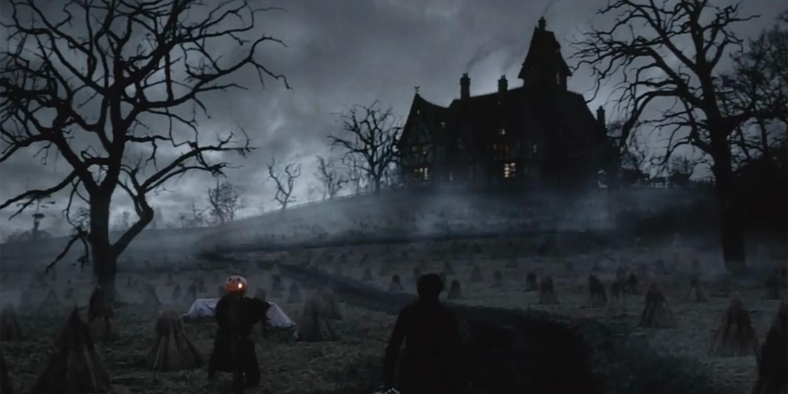
Nuestro sitio combina archivo visual y tienda, ofreciendo la oportunidad de admirar y adquirir prendas inspiradas en la estética gótica: capas largas, corsets, encajes, terciopelos y accesorios que reflejan la sofisticación y el dramatismo de este estilo atemporal. Cada imagen, cada detalle y cada prenda cuenta una historia, invitándote a sumergirte en un mundo donde la moda y el cine se encuentran en la oscuridad y el misterio.
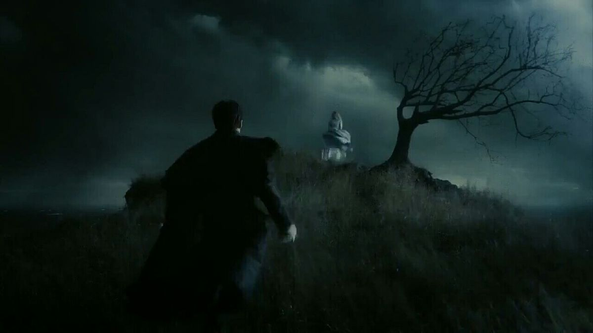
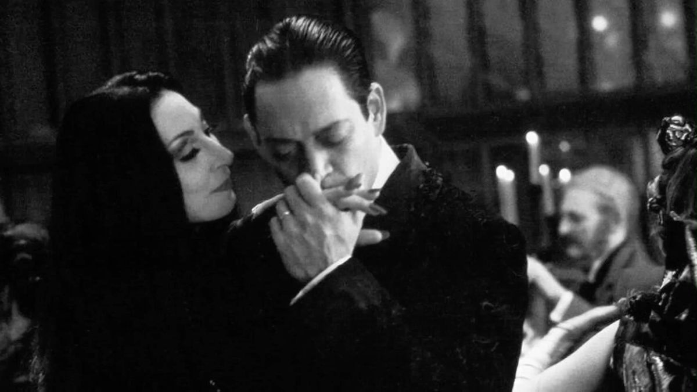
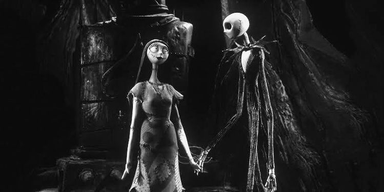
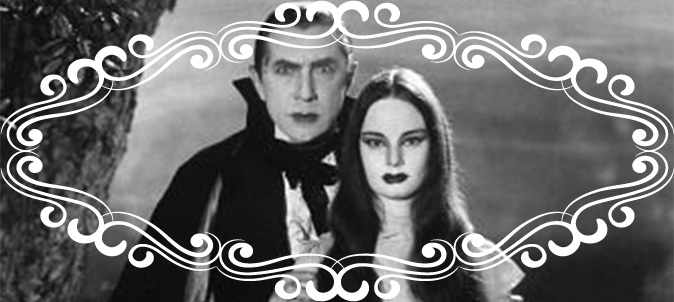
Durante las primeras décadas del siglo XX, el cine gótico clásico estableció los códigos visuales que aún hoy asociamos con el horror, el misterio y lo sobrenatural. Surgido principalmente en Alemania con el expresionismo y consolidado en Hollywood, este periodo combina arquitectura y escenografía dramática, iluminación contrastada y vestuario simbólico, creando atmósferas que transmiten tensión, miedo y fascinación estética.
El vestuario no es solo un accesorio: es parte integral de la narrativa. Cada prenda, cada textura, cada capa comunica algo sobre el personaje, su posición social y su relación con el mundo sobrenatural que habita. Las telas pesadas, los encajes delicados, el terciopelo oscuro y los corsets rígidos refuerzan la rigidez, la solemnidad o la decadencia de los protagonistas, mientras que las siluetas alargadas y los cuellos altos estilizan la figura, haciéndola parecer más etérea, misteriosa o incluso amenazante.
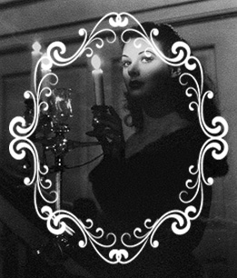
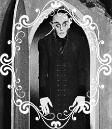
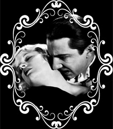
El gótico clásico combina elegancia y terror, mostrando una belleza que surge de la decadencia, del deterioro y de lo prohibido. Las prendas con detalles ornamentales, los pliegues que crean juegos de luces y sombras, los guantes, medallones y capas largas, no solo construyen la identidad del personaje, sino que construyen el espacio mismo de la película, haciendo que el vestuario se convierta en un instrumento narrativo y sensorial.
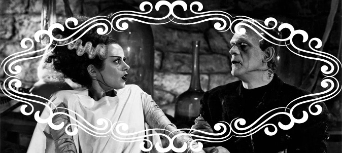
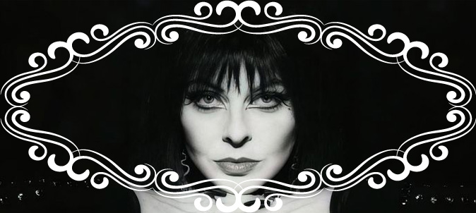
Durante los años 80 y 90, el cine gótico se transforma y se reinventa, fusionando la estética clásica del horror con influencias contemporáneas, punk, pop y surrealismo. Mientras que el gótico clásico construía mundos sombríos a través de la elegancia aristocrática y la rigidez, el gótico moderno explora la extravagancia, el humor negro, la decadencia estilizada y la psicología de los personajes. La vestimenta se vuelve más experimental, combinando elementos tradicionales —corsets, capas, terciopelo— con referencias urbanas y punk: cuero negro, botas altas, hebillas, sombreros excéntricos y siluetas más libres. Los colores oscuros siguen predominando, pero aparecen toques saturados de rojo, morado, verde o blanco, creando contraste y dramatismo visual.
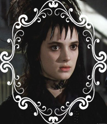
En esta etapa, la arquitectura, el maquillaje y la vestimenta se integran para crear universos estilizados donde lo gótico se encuentra con lo contemporáneo: escenarios suburbanos, mansiones victorianas, bosques sombríos y calles nocturnas se combinan con la moda oscura de los protagonistas.
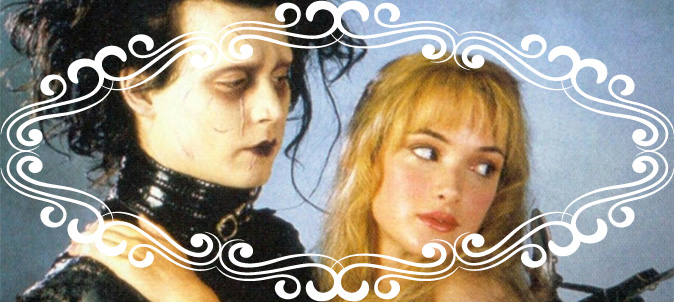
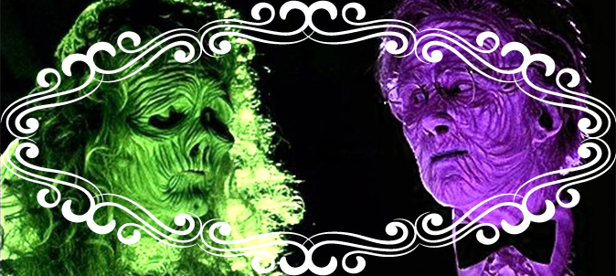
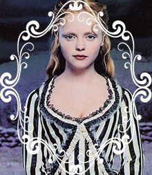
El cine gótico moderno no solo busca generar miedo, sino también impactar visualmente y transmitir la personalidad de cada personaje. Por ejemplo: Lydia Deetz en Beetlejuice, Eduardo Manostijeras, Entrevista con el vampiro y Sleepy Hollow. El gótico moderno es, en definitiva, una reinterpretación del terror clásico: mezcla humor, teatralidad y romanticismo oscuro, mientras amplía la paleta visual y el vocabulario del vestuario gótico, convirtiéndolo en un icono cultural de identidad y estilo que sigue influyendo en la moda y el cine actual.
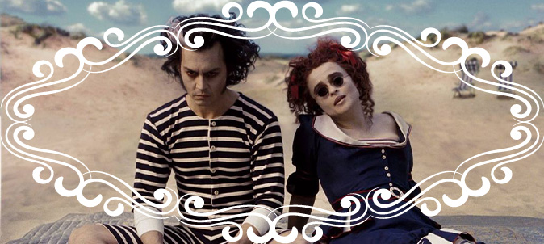
Desde principios del siglo XXI, el gótico en el cine evoluciona hacia una estética más diversa, estilizada y cosmopolita, fusionando elementos clásicos con influencias modernas de la moda, el cine de autor, el steampunk y la cultura pop. Esta etapa no solo recupera la elegancia y el misterio del gótico clásico y moderno, sino que también lo adapta a contextos urbanos, fantásticos y minimalistas.
La vestimenta en el cine gótico contemporáneo refleja una fusión entre tradición y modernidad. Predominan los colores oscuros como el negro, el gris, el azul marino y el burdeos, combinados con accesorios metálicos, cuero, botas altas y corsets reinterpretados, así como siluetas más libres que aportan dinamismo y sofisticación. La influencia de la moda contemporánea permite que los personajes góticos puedan mostrarse elegantes, minimalistas o incluso con toques futuristas, sin perder la esencia oscura y dramática que caracteriza al estilo. Los contrastes de color y textura se vuelven más audaces, incorporando combinaciones de tejidos, brillos sutiles, transparencias y capas que generan un impacto visual fuerte y evocador.
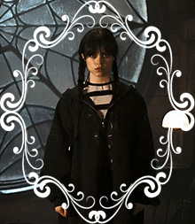
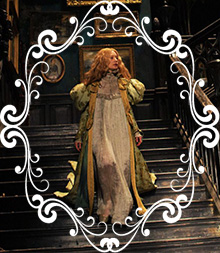
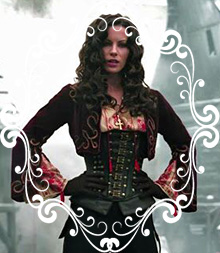
Esta etapa también refleja la interacción entre cine y moda: diseñadores de vestuario contemporáneos utilizan telas innovadoras, técnicas de costura modernas y referencias históricas reinterpretadas para crear personajes memorables. La narrativa visual combina lo clásico y lo moderno, lo urbano y lo romántico, lo oscuro y lo luminoso, consolidando al gótico como un lenguaje estético flexible y vigente. En este contexto, la ropa se convierte en una extensión de la identidad de los personajes. Vampiros, brujas y criaturas fantásticas expresan su poder y personalidad a través de la elegancia y la extravagancia de sus atuendos, mientras que protagonistas adolescentes o urbanos reinterpretan la estética gótica con elementos modernos, dando lugar a un estilo reconocible y accesible para nuevas generaciones
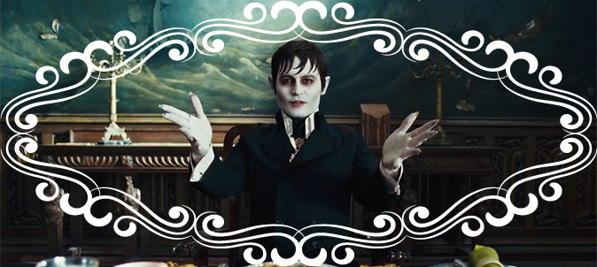
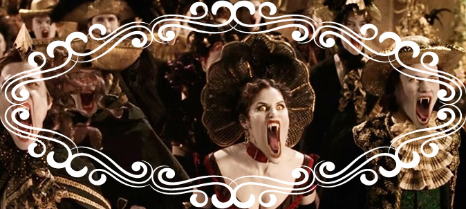